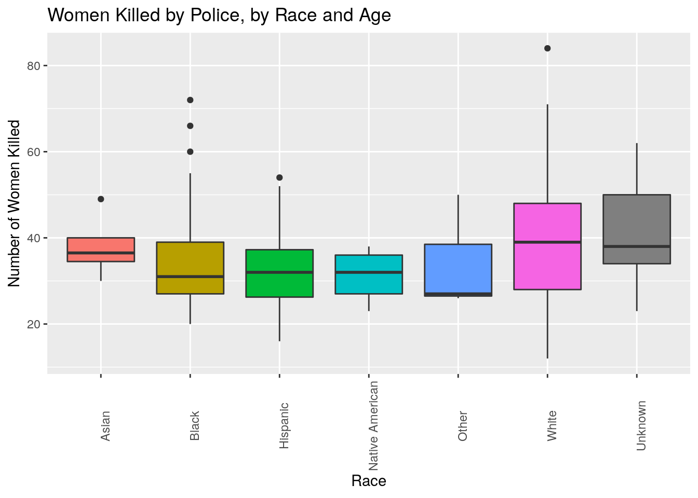
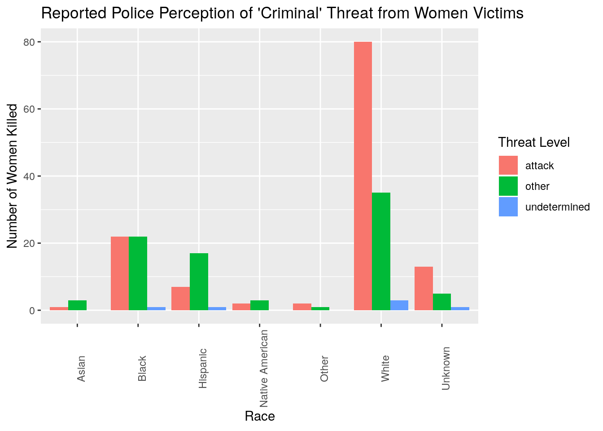
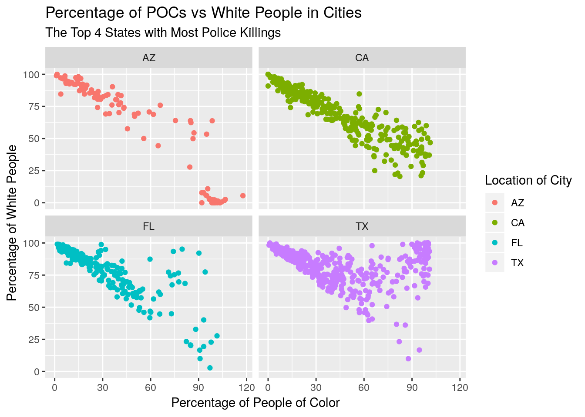

This analysis is inspired by a comprehensive and frequently updated database of fatal police shootings as compiled by The Washington Post since January 1st, 2015. The criteria for a victim being included in the database is only in circumstances in which a police officer, in the line of duty, shot and killed a civilian. In particular, there was a need to highlight the disparities that women of color and younger women face in relation to fatal police shootings.

This graph plots the age distribution of women killed by police categorizing it by race. It is evenly distributed across people aged between 20 and 55, with a mode of 55. This contravenes the conventional hypothesis of younger women being more vulnerable to police shootings. This graph shows that the number of older Black woman victims is far lower than the number of older White woman victims. In addition, Black, Hispanic, and Native American woman victims all tend to be much younger than White woman victims.
The 10 States with the Most Women Killed by Police| state | number_of_deaths |
|---|---|
| CA | 35 |
| TX | 29 |
| AZ | 16 |
| FL | 14 |
| GA | 13 |
| MO | 9 |
| TN | 7 |
| AL | 6 |
| CO | 6 |
| NM | 6 |
The above table examines the states with the most women killed by police. Most of these states are in the South, although California is an exception. One possible explanation is the sheer size of California’s population.
Top 10 States with Most Police Killings| state | number_of_deaths |
|---|---|
| CA | 725 |
| TX | 424 |
| FL | 297 |
| AZ | 229 |
| CO | 168 |
| GA | 161 |
| OK | 148 |
| OH | 140 |
| NC | 135 |
| WA | 132 |
The above table outlines the states with the most police killings overall. Notably, far fewer of these states are Southern, indicating that Southern police officers are more likely to kill women.

This graph explores how cops perceive women of various races. Cops reported their victims as attacking them, being threatening but not attacking them, or behaving otherwise. Notably, cops killed Black women for being threatening in ways other than attacking cops more than they were killed for actually attacking, according to police officers. By contrast, far more White victims were actually attacking than appearing threatening in another way.

From the data visuals, it is clear that in cities with greater proportion of white people, there is a smaller proportion of people of color living in those cities. The same can be seen from cities with greater proportion of people of color, there is a smaller proportion of white people. It can be infered that segegation by race is a characteristic of the top four states with the highest numbers of police fatalities.